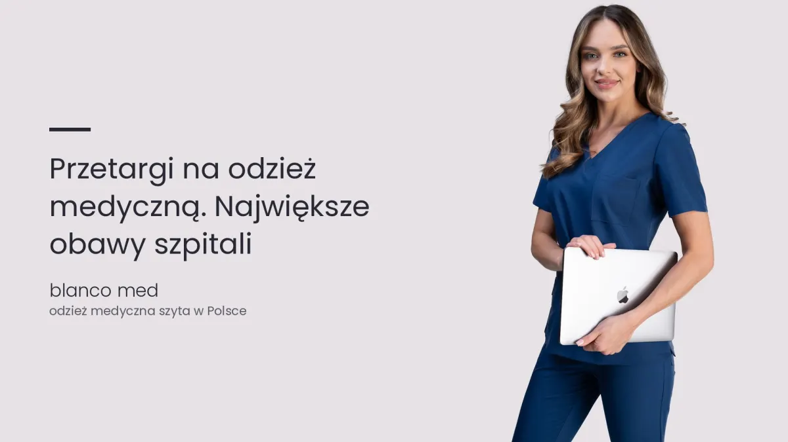

Najnowszy wpisDla placówek i przetargów
Największe obawy przy przetargach na odzież medyczną. Jak wygląda to po obu stronach
Przetarg na odzież medyczną to decyzja, za którą stoją ludzie po obu stronach. Pokazujemy, czego obawia się zamawiający, czego dostawca i jak ograniczyć ryzyko jeszcze przed umową.